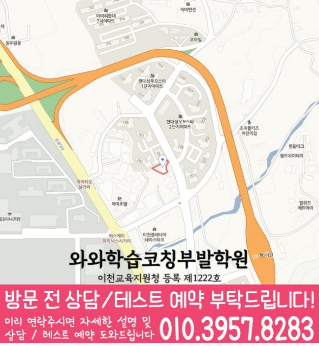

High school Korean · English · Math
부발읍 고등학생 국영수학원
부발읍 고등학생 국영수학원 선택 전 고등 내신 자료, 최근 오답과 과목별 가능 학년, 센터 위치·비용 확인 기준을 안내합니다.
01 Quick answer
부발읍에서 먼저 확인할 내용
부발읍에서 고등학생 국영수학원을 찾는다면 와와학습코칭센터 부발점의 과목별 가능 학년을 먼저 확인하세요. 제공된 고등학교 참고 자료와 학생의 실제 교재를 대조하고, 학생의 실제 풀이 기록에 맞게 과목별로 무엇을 먼저 보완할지 정하는 순서가 필요합니다.
대표 학생 상황
시험 전에는 집중력이 올라가지만 과목별 우선순위를 매주 바꾸는 편이고, 학습 앱 기록은 있지만 해석이 부족한 경향이 있어 중학교 때의 공부 습관을 고등 내신에 맞게 조정해야 하는 고등학생


010-6839-8283상담 전 핵심 안내
경기도 이천시 부발읍에서 고등학생 국영수학원을 찾는 학부모님이라면, 먼저 확인할 답은 “세 과목을 한곳에서 듣는가”보다 “학생의 약점이 과목별로 기록되고 다음 수업에 반영되는가”입니다. 이 학습 장면을 토대로 부발읍 상담의 확인 순서를 정리합니다. 세 과목을 함께 계획하더라도 부발읍 학생의 오답 원인과 완료 기준은 따로 확인합니다. 또한 제공된 학교 정보와 주소, 풀이 과정 기록처럼 상담에서 확인할 자료를 함께 살펴 상담 전에 확인할 질문을 정리합니다.
경기도 이천시 부발읍 학부모가 먼저 볼 내용
학부모 상담에서 자주 나오는 걱정은 “부발읍 고등학생 국영수학원에서 우리 아이가 세 과목을 모두 따라갈 수 있을까”라는 점입니다. 경기도 이천시 부발읍 기준으로는 국어·영어·수학을 한꺼번에 늘리는 계획보다는 최근 학습 기록과 실행 가능성을 먼저 봐야 합니다. 고등학생의 현재 교재와 오답 기록을 보고 세 과목의 보완 순서를 확인하는 편이 좋습니다. 부발읍에서 수업을 비교할 때는 최근 단원, 틀린 유형과 실제 과제 시간을 한 기록에서 확인하는 편이 좋습니다. 부발읍 학생은 이번 주에 실행할 과목별 행동 한두 가지부터 구체적으로 정하는 편이 좋습니다.
부발읍 고등학생 학습 점검의 국어·영어·수학 관리 흐름
과목별 점검 순서를 정할 때, 과목을 묶어 계획해도 읽기, 해석, 풀이에서 막히는 지점은 각각 기록해야 합니다. 부발읍 고등학생의 국어 수업은 지문을 반복해서 읽기 전에 문제와 연결되는 근거 문장을 찾게 합니다. 경기도 이천시 부발읍에서 영어가 불안정하다면 배운 문법을 지문 해석에 적용해 반복 오류를 찾아야 합니다. 부발읍 고등학생 세 과목 학습 상담에서 수학 계획을 세울 때는 공식 암기 다음에는 조건 해석, 식 세우기, 계산 검산을 분리해 봅니다. 학생이 풀이를 이어가지 못한 지점을 남기면 다시 확인할 개념과 유형을 찾기 쉽습니다. 부발읍 세 과목 학습을 계획할 때는 과목별 피드백이 다른 과목의 복습을 밀어내지 않는지 살펴보세요. 경기도 이천시 부발읍에서 세 과목 일정이 겹치는 고등학생에게는 과제량과 복습 시간을 현실적으로 조정하는 과정이 필요합니다.
부발읍에서 국영수를 꾸준히 다니는 조건
부발읍 생활권에서 고등학생 학습 과정을 선택할 때는 수업 내용과 함께 지속 가능성을 살펴야 합니다. 경기도 이천시 부발읍 학부모님이 체감하는 현실은 평일 저녁에 여러 과목을 따로 이동하면 집중력이 흩어질 수 있어 동선과 수업 밀도를 함께 봐야 합니다. 방문 전에 확인할 센터 주소는 경기 이천시 부발읍 경충대로2092번길 39-19 이천하이클래스 207,208입니다. 고등학생의 경우 수업 뒤 귀가와 복습까지 이어질 수 있는 동선인지도 살펴보세요. 부발읍 고등학생 학습 점검에서 풀이 과정 기록을 묻는 이유도 결국 고등학생은 수업 시간이 늦어질수록 복습 시간이 줄어들 수 있으므로 등하원 계획이 학습 계획의 일부가 됩니다.
부발읍 학교 일정과 현재 교재를 함께 확인하기
상담 자료를 정리하면, 센터 자료에서 확인한 고등학교 참고 목록은 효양고·제일고입니다. 학교 자료를 대조할 때, 실제 수업 여부는 학생 자료와 센터별 과목·학년 운영 범위를 확인한 뒤 판단합니다.
학교 일정까지 함께 보면, 부발읍 고등학생의 현재 자료를 국어·영어·수학으로 분류하면 시험·교과 범위와 복습할 단원을 더 명확히 볼 수 있습니다. 센터 안내와 비교할 때, 학교 일정이 주간 과제에 반영되는지도 함께 확인합니다.
부발읍 고등학생 학습 점검 상담 전 준비 질문
고등 국어·영어·수학 관리 기준 상담 전에는 과목별 약점과 주간 실행 시간을 함께 확인하는 편이 좋습니다. 첫 상담에서는 부발읍 학생의 최근 시험지, 학교 프린트와 풀다 멈춘 문제집을 함께 보면 현재 위치를 더 구체적으로 알 수 있습니다. 부발읍 학부모님이 풀이 과정 기록을 함께 확인한다면 부발읍 학생이 싫어하는 과목을 무조건 늘리기보다 감당할 수 있는 주간 학습량부터 정하는 편이 현실적입니다. 고등학생의 경우 학생의 왕복 이동 시간이 과제와 오답 복습을 방해하지 않는지도 함께 점검해야 합니다. 부발읍 국어·영어·수학 학습 계획을 살펴볼 때는 과목별 점검 내용과 재확인 날짜를 함께 물어보세요. 학원을 비교할 때는 위치와 시간표뿐 아니라 시험 분석이 다음 주 계획에 실제로 반영되는지 확인해야 합니다.
02 Consultation examples
부발읍 학부모 상담 상황 예시
아래 내용은 실제 고객 후기나 성적 결과가 아니라, 상담에서 확인할 질문을 이해하기 위한 상황 예시입니다.
부발읍 고등학생의 상담을 가정한 예시입니다. 국어·영어·수학 점수만 비교하지 않고 시작이 늦어진 과제, 반복한 오답과 학교 일정을 나누어 본 뒤 이번 주에 실행할 한두 가지를 정리합니다.
부발읍에서 제공된 고등학교 참고 정보인 효양고·제일고의 목록과 학생의 실제 학교 자료를 대조해 질문하는 상황입니다. 학부모는 학교명 자체보다 시험 범위와 수행평가 일정이 수업 계획에 반영되는지, 다음 확인 시점이 언제인지 기록합니다.
03 FAQ
부발읍 고등학생 국영수학원 자주 묻는 질문
학부모님이 상담 전에 자주 확인하는 내용을 질문과 답변으로 정리했습니다.
부발읍 고등학생 국영수학원 선택 전 학생의 어떤 습관을 살펴야 하나요?
최근 시험 뒤 과목별 보완 순서를 정하기 어렵다면 시험지와 오답 기록을 함께 준비하세요. 부발읍 상담에서는 내신 일정과 실제 복습 시간을 대조해 우선순위를 확인할 수 있습니다.
부발읍 국영수 학습에서 과목별 병목을 어떻게 나누나요?
부발읍 상담에서는 세 과목을 같은 분량으로 나누기보다 최근 시험과 학교 일정, 반복 오답을 기준으로 우선순위를 정합니다. 과목별 완료 기준이 있어야 계획과 실제 실행의 차이를 확인할 수 있습니다.
부발읍 고등학교 참고 정보는 상담에서 어떻게 활용하나요?
효양고·제일고 등은 제공 자료의 고등학교 참고 목록입니다. 학생이 가져온 시험 범위표·학교 프린트·수행평가 일정 자료를 대조하고 희망 센터의 과목·학년 운영 여부를 별도로 확인하세요.
부발읍 상담 시 개설 과목과 보강 방식은 어디에 문의하나요?
실제 방문 위치는 위 센터 확인 정보에서 확인할 수 있습니다. 센터별 교습비 확인 버튼에서 제공 자료를 볼 수 있습니다. 부발읍 학생의 가능 학년과 개설 과목, 수업 시각과 보강 기준은 희망 센터에 직접 문의해야 합니다.
04 Continue
부발읍 페이지 이동
카테고리 전체 지역 또는 앞뒤 지역 안내로 이동할 수 있습니다.